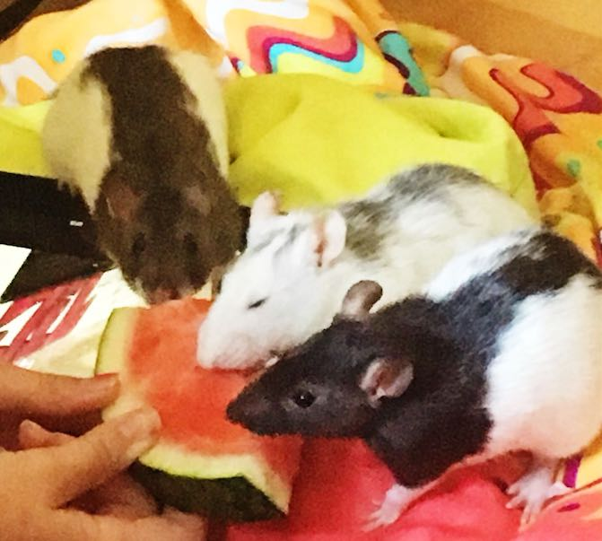
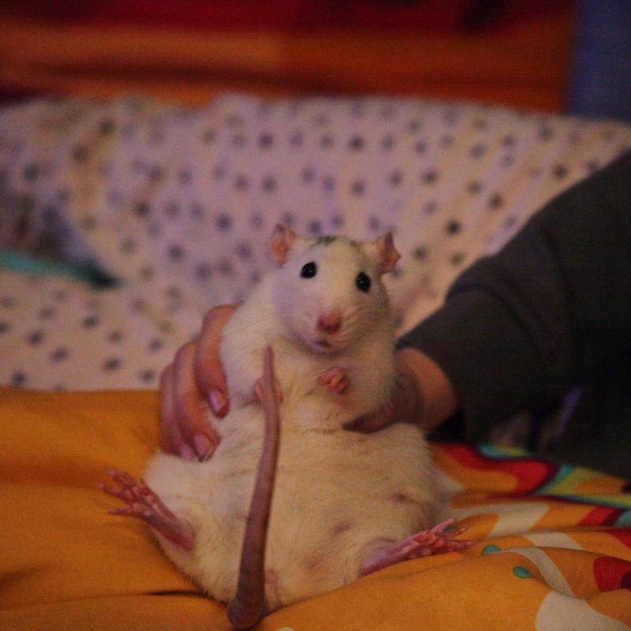
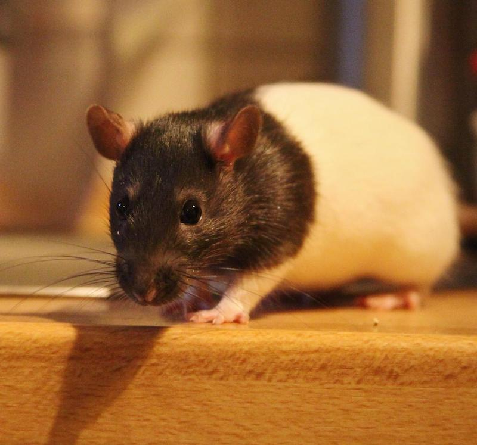
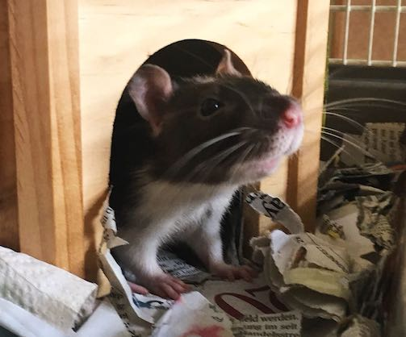

Wir haben seit 2 Jahren Farbratten als Haustiere. Unsere aktuellen Ratten heissen Kasper, Odin, Munin und Hugin. Hier sind sie beim Melonenschmaus.
Sie ist ganz zahm und verfressen. Als junge Ratte war sie ganz wild und ist überall rumgeklettert. Jetzt ist sie viel ruhiger, vorsichtiger und tollpatschiger.
Munin ist noch ganz jung und verspielt. Sie klettert wie wild rum und stänkert mit Kasper
Hugin ist die Beschützerin, auch sehr verfressen aber noch scheu.
